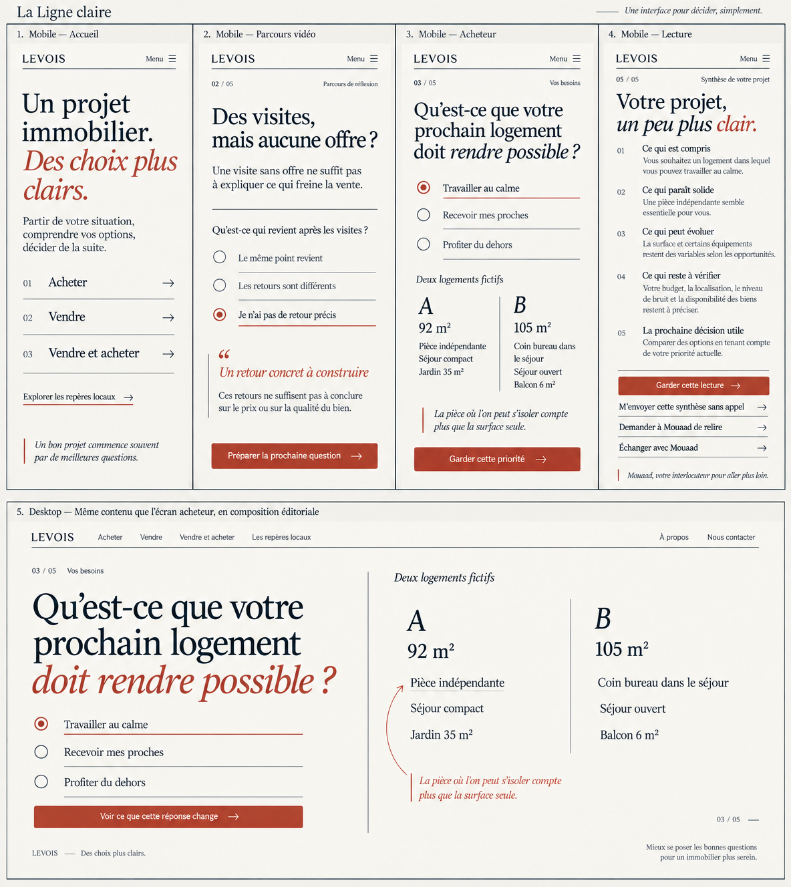
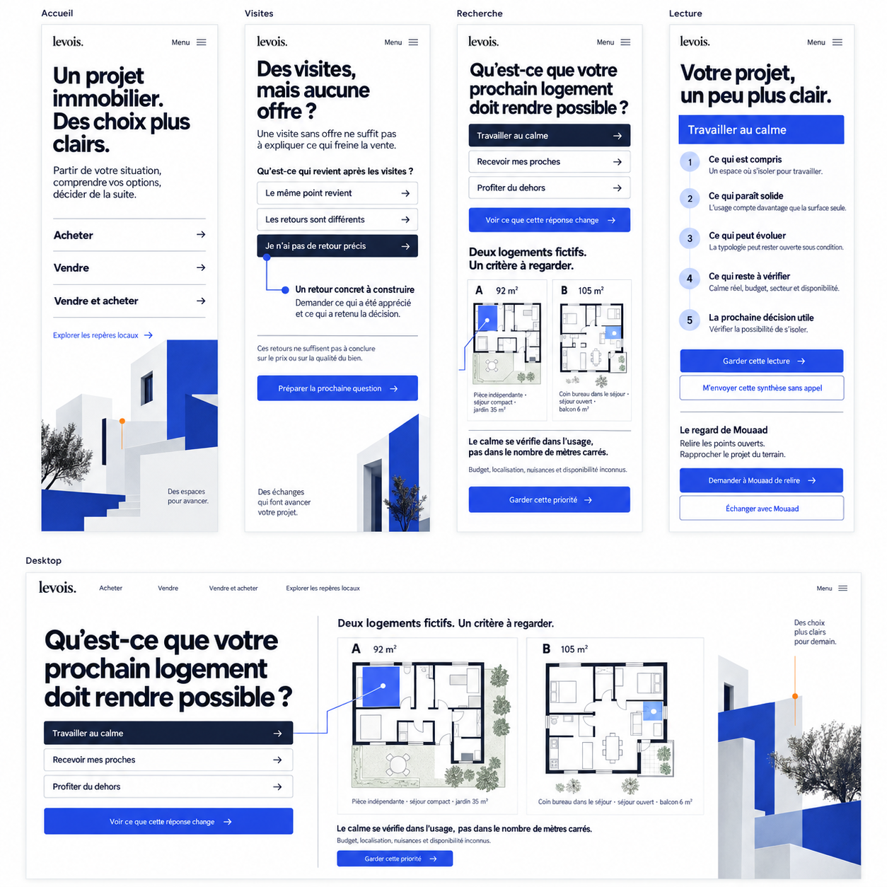
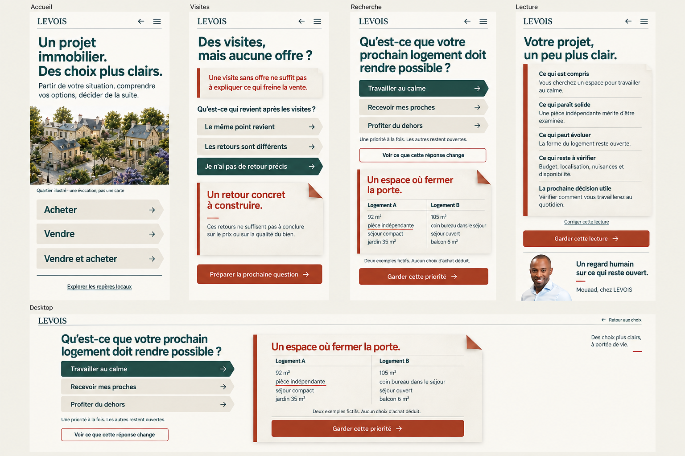

01 / Éditoriale
La Ligne claire
Le projet devient une lecture
que l’on peut annoter.
Voir l’intention visuelle

Planche d’intention générée. Le prototype au-dessus constitue la preuve fonctionnelle.
Direction artistique
Exploration locale · septembre 2026
Clarifier un projet immobilier, faire apparaître les conséquences d’un choix, puis laisser la personne décider de la suite.
Les cadres ci-dessous sont des prototypes interactifs. Les quatre situations, les réponses et les exemples sont communs aux trois directions. Aucun envoi ni suivi d’audience.
Commencez par les trois accès projet, puis ouvrez les repères locaux séparément.
01 / Éditoriale
Le projet devient une lecture
que l’on peut annoter.

Planche d’intention générée. Le prototype au-dessus constitue la preuve fonctionnelle.

Planche d’intention générée. Le prototype au-dessus constitue la preuve fonctionnelle.
03 / Habitée
Les choix immobiliers prennent
la mesure de la vie quotidienne.

Planche d’intention générée. Le prototype au-dessus constitue la preuve fonctionnelle.
Cadres de référence : 390 × 844. Faites défiler chaque expérience. Pour juger le desktop ou un téléphone réel, utilisez « Ouvrir en plein écran ».
Le choix reste ouvert.